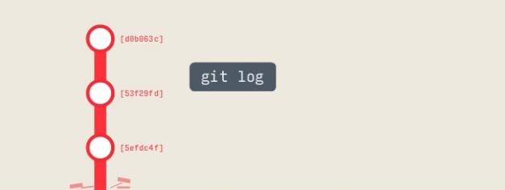

Basic
-
放進 stage
git add.
-
完成階段性任務
git commit -m "first commit"
git remote add origin http://xxoo.gitgit push -u origin master
Create
-
複製 repository
git clone xxxx.git
-
初始化，把當前資料夾做 local 數據庫
git init
Local Changes
-
哪些檔案沒被 track / 哪些檔案被修改
git status
-
新增以及修改你的檔案， . 代表當前目錄下所有的檔案
git add .
-
新增以及修改<file> 這個檔案
git add <file>
-
提交檔案並簡單說明
git commit -m "簡單說明"
-
刪除資料夾
git rm -r "<filename>"
-
當你忘記把 node_modules/ 這種資料夾放到 .gitignore 裡，在 local 刪除並不會讓 remote 也刪除，這時要打下列這個
git rm --cached -r node_modules
Update and Publish
-
新增遠端的 repository
git remote add <remote> <url>
-
跟 pull 不同的是只會更新歷史記錄不會合併到 local
git fetch
-
從遠端拉最新檔案到現在的 local branch(HEAD)
git pull <remote> <branch>
-
減少歷史記錄的混亂
git pull --rebase
-
上傳 local 檔案去遠端(remote)
git push <remote> <branch>
Commit History
-
數據庫的歷史提交記錄(只要有 commit 就會有一組40個英文數字識別碼)
git log

-
可以顯示包含標籤資料的歷史記錄
git log --decorate
-
簡化顯示資料(前7碼識別碼跟 commit)
git log --oneline
-
顯示<file>的歷史記錄
git log -p <file>
-
<file>是誰改跟改了什麼
git blame <file>
Stash 暫存
-
將修改的部分丟進暫存，在切換 branch 又不想存時適用
git stash
-
存進暫時記憶體(-u 連untrack file也進去)
git stash -u
-
列出暫存的資料
git stash list
-
取出暫存，然後刪掉取出的這個暫存
git stash pop
-
把stash@{0}這個暫存叫出來，然後刪掉stash@{0}這個暫存
git stash pop stash@{0}
-
把這個暫存叫出來,暫存不會被刪掉
git stash apply
-
刪除某個暫存
git drop stash@{0}
Branch and Tags
-
列出所有 branch
git branch
-
新增一個 branch
git branch <new-branch>
-
刪除 branch
git branch -d <branch>
-
switch 到 <branch> 這個 branch
git checkout <branch>
-
新增一個 branch 並 switch 過去
git checkout -b <new-branch>
-
想 checkout 一個本機沒有但 remote 有的 branch (記得先 git fetch)
git checkout -b <new-branch> <origin/new-branch>
-
列出所有 tag
git tag -l
-
添加標籤並建立 tag massage 訊息
git tag <tagName> -m 'tag massage'
-
在 commit-id 的 HEAD，建立 tag-name 的 tag
git tag <tag-name> <commit-id>
瀏覽歷史
-
後面接 commit 編號
git checkout 53f29fd
-
後面接分支名稱
git checkout master
-
使用相對位置
git checkout HEAD^
git checkout HEAD~2
Reset 放棄提交(過去的)
-
放棄 add，但保留修改把 modifed 改成還沒 modified(綠轉紅)
git reset
git reset HEAD .
-
放棄所有修改，回到最新的 commit
git reset --hardgit reset --hard HEAD
-
放棄 pull 錯的檔案，回到前一個 commit 版本( HEAD^ 代表前 1 次)
git reset --hard HEAD^
-
回到前前一個 commit 版本
git reset --hard HEAD^^git reset --hard HEAD~2
-
把已經 commit 東西拿回來, 回到上個版本
git reset --soft HEAD^
-
若 reset 錯，可以還原到 reset 前的狀態
git reset --hard ORIG_HEAD
改寫 Commit
-
可以修改檔案並改變最後一次提交(忘記修改某個東西不用再有新的 commit)
git commit --amend
-
等於取消剛提交的內容，但歷史記錄會多一條
git revert HEAD
-
從其他 branch 複製指定的 commit，導入現在的 branch
git cherry-pick <別的分支 commit-id>
-
改寫提交，替換，刪除，合併
git rebase -i
Else
-
刪除資料夾
git rm -r "<filename>"